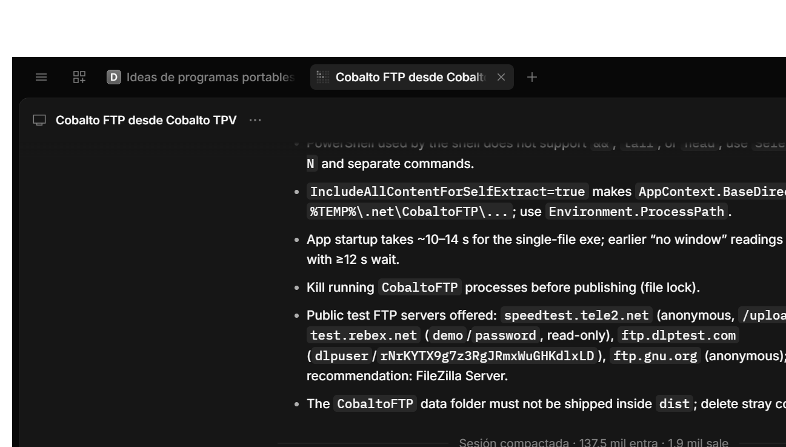

Tu equipo y tu servidor, en la misma ventana.
Cliente FTP y FTPS portable para Windows. Entra en cualquier unidad —Descargas, Documentos, un USB— y transfiere con doble clic. Sin instalador, sin cuentas y sin ventanas de más.
Descarga directa
CobaltoFTP.exe
sin instalar
La descarga se inicia automáticamente.
Verificar SHA-256
96D0F248167CBA0C3275D0ABB1E5279B6D6AFD369B05306A3B30F8FA3962776F

Vista real: tus discos a la izquierda, el servidor a la derecha.
Pensado para mover archivos, no para pelear con la ventana.
Lo que en otros clientes son tres menús y una ruta que hay que recordar, aquí es un panel, un selector y doble clic.
-
Todas tus unidades
Un selector con todos los discos conectados y accesos de un clic a Descargas, Documentos, Escritorio e Inicio. También puedes escribir cualquier ruta y pulsar Enter.
-
Dos paneles, cero dudas
Local a la izquierda, servidor a la derecha. Doble clic para entrar en una carpeta o para subir y bajar un archivo al instante.
-
Carpetas completas
Selecciona una carpeta y súbela o bájala entera. Cobalto FTP reproduce la estructura de subcarpetas y encola cada archivo con su progreso.
-
Sesiones que no se pierden
Guarda tus servidores y contraseñas. Las credenciales se cifran con DPAPI, la protección de tu propio usuario de Windows, y la carpeta de datos viaja junto al .exe.
-
FTP y FTPS
Conexión directa, FTPS explícito o FTPS implícito, con modo pasivo y validación de certificado. SFTP todavía no está disponible y la app lo dice claro.
-
Un solo archivo
Sin instalador ni dependencias: el .NET necesario va dentro del ejecutable. Copia el .exe a un USB y tus sesiones van con él.
Tres pasos y estás dentro.
-
Descarga el .exe
59,4 MB. Se guarda como
CobaltoFTP.exeen tu carpeta de Descargas. -
Ábrelo
No hay instalador. Al arrancar crea su carpeta
CobaltoFTP\junto al ejecutable para guardar sesiones. -
Conecta y transfiere
Escribe el servidor, el usuario y la contraseña. Si el servidor es anónimo, deja el usuario vacío.
Antes de descargar
Lo importante, sin letra pequeña.
¿Necesito instalar .NET o algún requisito?
No. El ejecutable es autocontenido e incluye el runtime. Solo necesitas Windows 10 u 11 de 64 bits.
¿Windows avisará de que es un archivo desconocido?
Puede ocurrir con cualquier ejecutable descargado de internet. El archivo no está firmado digitalmente, así que SmartScreen puede pedirte confirmación. Puedes comprobar el SHA-256 en la tarjeta de descarga.
¿Dónde guarda mis sesiones y contraseñas?
En una carpeta CobaltoFTP\ junto al .exe; si esa ubicación no se puede escribir, en %LOCALAPPDATA%\CobaltoFTP\. Las contraseñas se cifran con DPAPI y nunca se guardan en texto plano.
¿Por qué no hay SFTP?
Por ahora Cobalto FTP habla FTP, FTPS explícito y FTPS implícito. La opción SFTP aparece en la interfaz, pero se rechaza con un aviso en lugar de fingir que funciona.
¿Cómo lo actualizo?
Descarga el nuevo .exe y reemplaza el anterior. Conserva la carpeta CobaltoFTP\ que está a su lado: ahí viven tus sesiones.